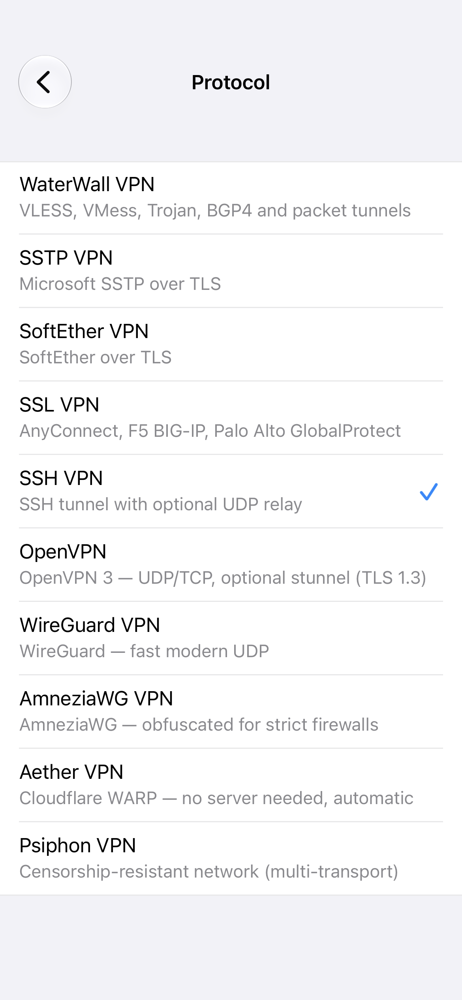
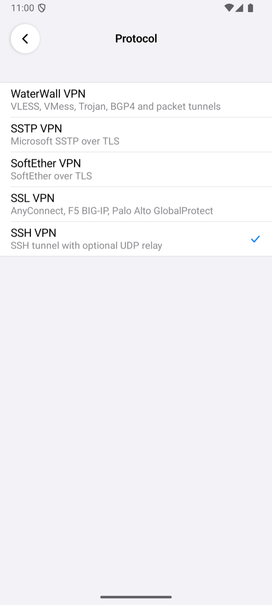
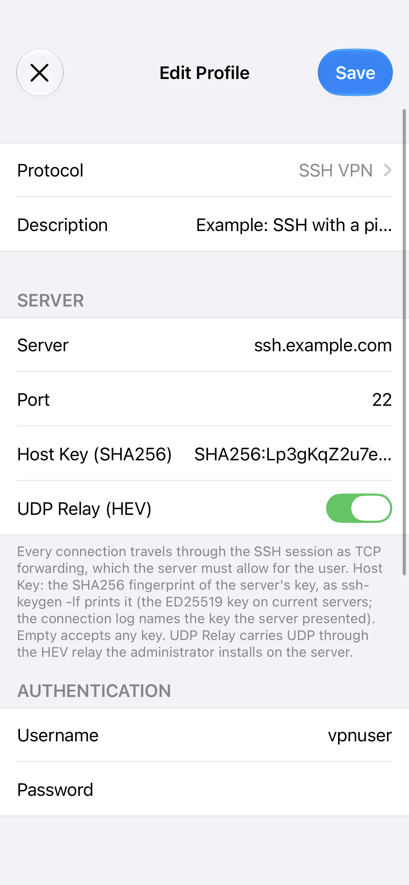
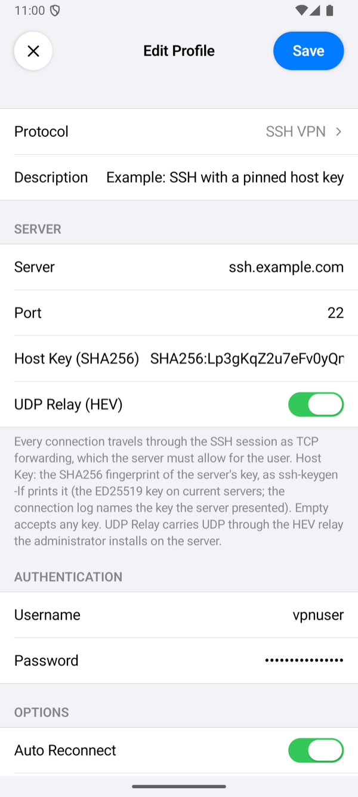
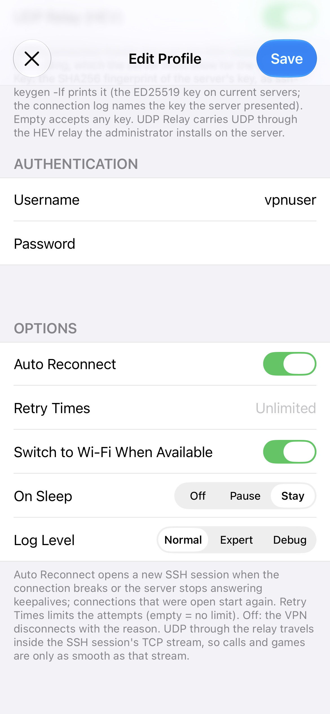
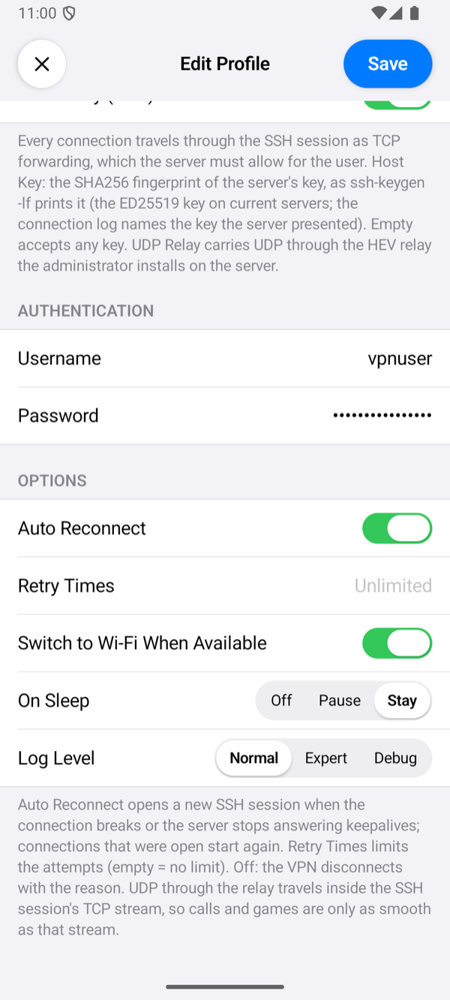
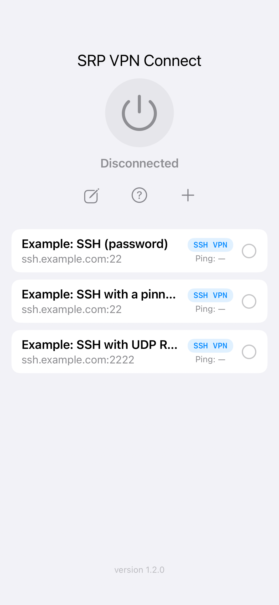
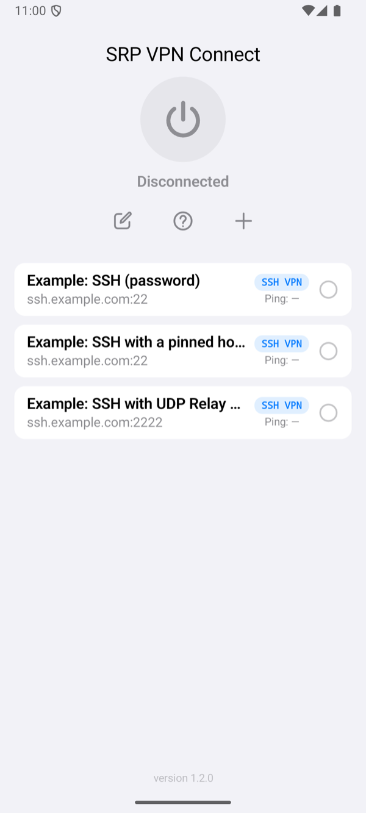

Setting Up the App
An SSH VPN profile has the same fields on iPhone and Android. This page goes through them in the order the profile editor shows them.
The fields, defaults, footers and messages were read from the source code of both apps, and the screenshots were taken from them with example profiles. What each setting did against a real server is in Test results.
Add a profile
Tap + on the home screen, tap Protocol and choose SSH VPN. Fill in the fields below and tap Save. Save names the first field that is still missing instead of saving an incomplete profile: Enter the server address., Enter the username. or Enter the password.


Server


| Field | What to enter |
|---|---|
| Server | The server's DNS name, for example ssh.example.com, or its IPv4 address. |
| Port | The server's SSH port. Empty means 22. |
| Host Key (SHA256) | Optional. The fingerprint of the server's ED25519 host key, as ssh-keygen -lf prints it: the SHA256:… part or the whole line. With it, the app connects only to a server that shows that key; empty accepts any key. See the host key's fingerprint. |
| UDP Relay (HEV) | Off by default. On: UDP goes through the SSH session to the relay on the server, which the administrator installs (the UDP relay). Off: everything but UDP works; DNS too. |
Authentication
Username and Password of the server's user. The app logs in with the password; on a server that takes passwords only through its keyboard-interactive (PAM) login, the app answers its prompt with the same password. A password may hold any character, spaces and letters of any script included.
Options


| Option | What it does |
|---|---|
| Auto Reconnect, Retry Times | Auto Reconnect (on by default): when the connection breaks, the server ends the session, or the server has not answered for 50 seconds, the app opens a new SSH session 2 seconds later, and keeps trying while the server is away. Connections that were open start again, as SSH cannot carry them over to a new session. Retry Times limits the failed attempts in a row; empty means no limit. Before the first connection, Retry Times also repeats a failed connection. A refused login, a host key that does not match, a user the server does not let forward TCP and an unavailable relay are never retried: the profile or the server must change first. Without Auto Reconnect, a VPN that was up ends with the reason, for example The server closed the connection (auto reconnect is off). |
| Switch to Wi-Fi When Available | On by default: when Wi-Fi appears while the VPN is up, the app opens a new SSH session over it. |
| On Sleep | Stay (default) keeps the connection while the device sleeps. Pause closes it and connects again on wake. Off closes it; on wake it connects again only with Auto Reconnect, otherwise the VPN ends with The connection was closed while the device slept. |
| Log Level | How much the connection log shows. Normal: the milestones: the server and port the app connects to, the server's host key with its fingerprint, the login and the session. Expert adds the transfer counters, every 5 seconds while traffic moves. Debug adds a line for each connection through the tunnel and, on iPhone, the packet engine's own lines. No level writes the password. Tap the status under the power button to open the log. When the app gives up on a connection, a line starting with SSH: closing with reason: names the reason. |
An SSH VPN profile has no proxy setting: the app always connects to the server directly.
Connect and check


Select the profile on the home screen and tap the power button. The status changes to Connected once the app has logged in and the checks have passed. The row of the profile then shows the time of one request through the tunnel. If it fails, the app shows Connection Failed with a reason; Troubleshooting explains each one.